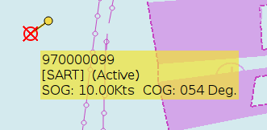
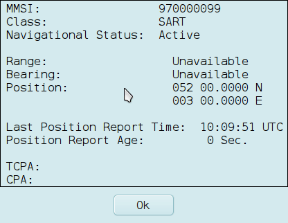
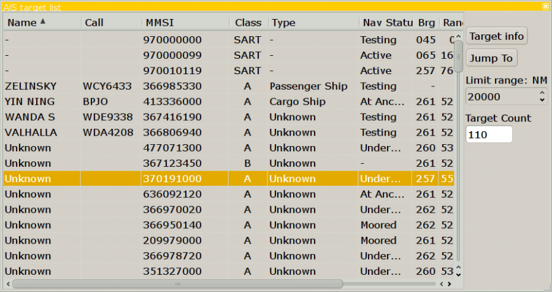
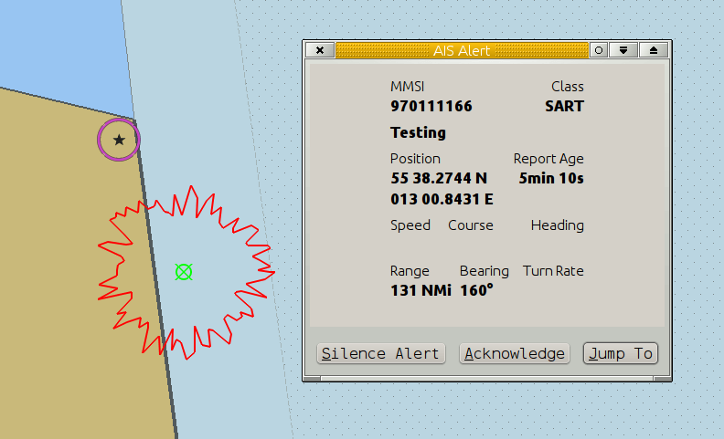

The US FCC has recently approved transmissions by AIS SART devices. These devices were originally designed for SOLAS class ships as an alternative to radar SARTs for carriage on life boats, but the efficiency of design has encouraged applications down to man-over-board devices.
Search And Rescue Transponders (SART) or PLB transmitting AIS messages are now available on the market. In an emergency situation the position will be displayed as an AIS target in OpenCPN. AIS SART can be a device on a vessel, in a life raft or a personal Man Over Board (MOB) device. MMSI always begins with 97.
If you and your crew have PLB personal locator beacons, transmitting AIS emergency messages, and the MMSI number of each device is entered in Options→Ships→MMSI Properties→New, OpenCPN from version 4.0, will automatically work as a man overboard tracking device. Read more in Man OverBoard.
The common thing is that the icon below marks an emergency.
SART icon, distress target display. This is a “Mayday”.
On OpenCPN a distress signal sent by a SART, triggers an visual alert and a warning sound, if this is activated in the ToolBox–>AIS Tab.
Once the alert is “Acknowledged”, the target behaves as any other AIS target. In the picture below the cursor is over the target. The SART target will persist on screen for 18 minutes after the last transmission irrespective of other settings for AIS. SART alerts always have priority over DSC and CPA alerts.

And here is an AIS target query.

AIS SART messages and DSC distress calls are always found at the top of the AIS target list.

Testing It is possible to test a SART, to make sure it works.

 Icon displayed when testing an AIS-SART device.
Icon displayed when testing an AIS-SART device.